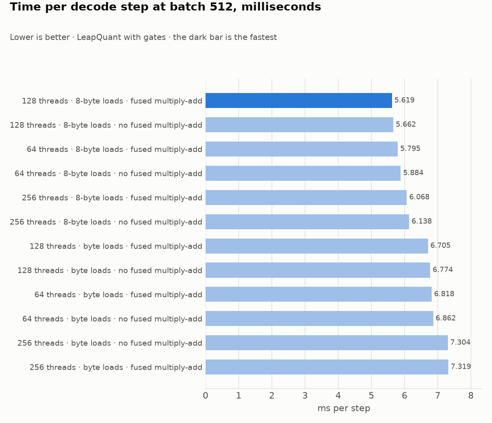

Build options of the GPU kernel
Every combination was built, verified against the reference and timed. The fastest correct build is installed.

| Threads per block | int8 loads | Fused multiply-add | Verification | Batch 32 | Batch 128 | Batch 512 |
|---|---|---|---|---|---|---|
| 128 | 8 bytes | yes | PASS | 0.7073 | 1.5943 | 5.6185 |
| 128 | 8 bytes | no | PASS | 0.6909 | 1.6005 | 5.6620 |
| 64 | 8 bytes | yes | PASS | 0.6397 | 1.7708 | 5.7955 |
| 64 | 8 bytes | no | PASS | 0.6627 | 1.7763 | 5.8840 |
| 256 | 8 bytes | yes | PASS | 0.6372 | 1.6379 | 6.0678 |
| 256 | 8 bytes | no | PASS | 0.6376 | 1.6398 | 6.1380 |
| 128 | 1 byte | yes | PASS | 0.7165 | 1.8625 | 6.7050 |
| 128 | 1 byte | no | PASS | 0.7131 | 1.8922 | 6.7741 |
| 64 | 1 byte | yes | PASS | 0.6472 | 2.0314 | 6.8178 |
| 64 | 1 byte | no | PASS | 0.6536 | 2.0082 | 6.8625 |
| 256 | 1 byte | no | PASS | 0.6442 | 1.9581 | 7.3044 |
| 256 | 1 byte | yes | PASS | 0.6437 | 1.9617 | 7.3192 |
What it shows
- Reading the int8 matrix 8 bytes at a time is 19% faster on average at the largest batch.
- Fused multiply-add and the thread count make little difference at this stage, because the fold dominates.
- The sweep's fastest build was
t128_w1_fmadtrue.
Source: steps/tune.log. These timings predate later kernel changes.
Generated 2026-11-13 00:39 from results/run-creative-franklin by reports/generate_reports.py.